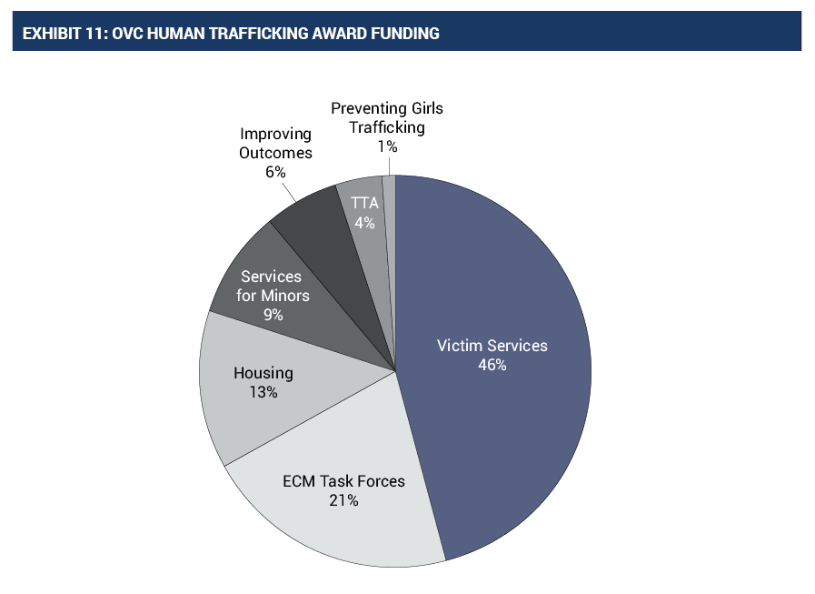

Political Thinking Concepts

Political Significance and Political Perspectives:
Human trafficking, although horrible, still has some significance. It contributes heavily to the global economy.
Human trafficking also tarnishes the country’s image as a safe country to start a family in. This could also cause the economy
to dip and the numbers contributing towards the economy from human trafficking will not be enough to trump the losses from less
immigrants. When thinking of human trafficking one must consider every single point of view. This includes the perspectives of
the trafficker, the victim and sometimes a buyer. One should also consider the perspective of people living in the area.
The perspectives could even continue out to the mp’s and people in the legislative branch.
Many people want to end human trafficking. This is a desirable cause as human trafficking brings a lot of harm.
A Lot has changed from the past. There is higher awareness, there are harsher punishments, security cameras etc. Human trafficking
can be stopped by any level of government. The federal government could have thorough checks going outside the country.
Provincial borders could be formed and all vehicles being checked when going through. Municipal government could continue to
raise awareness in school.